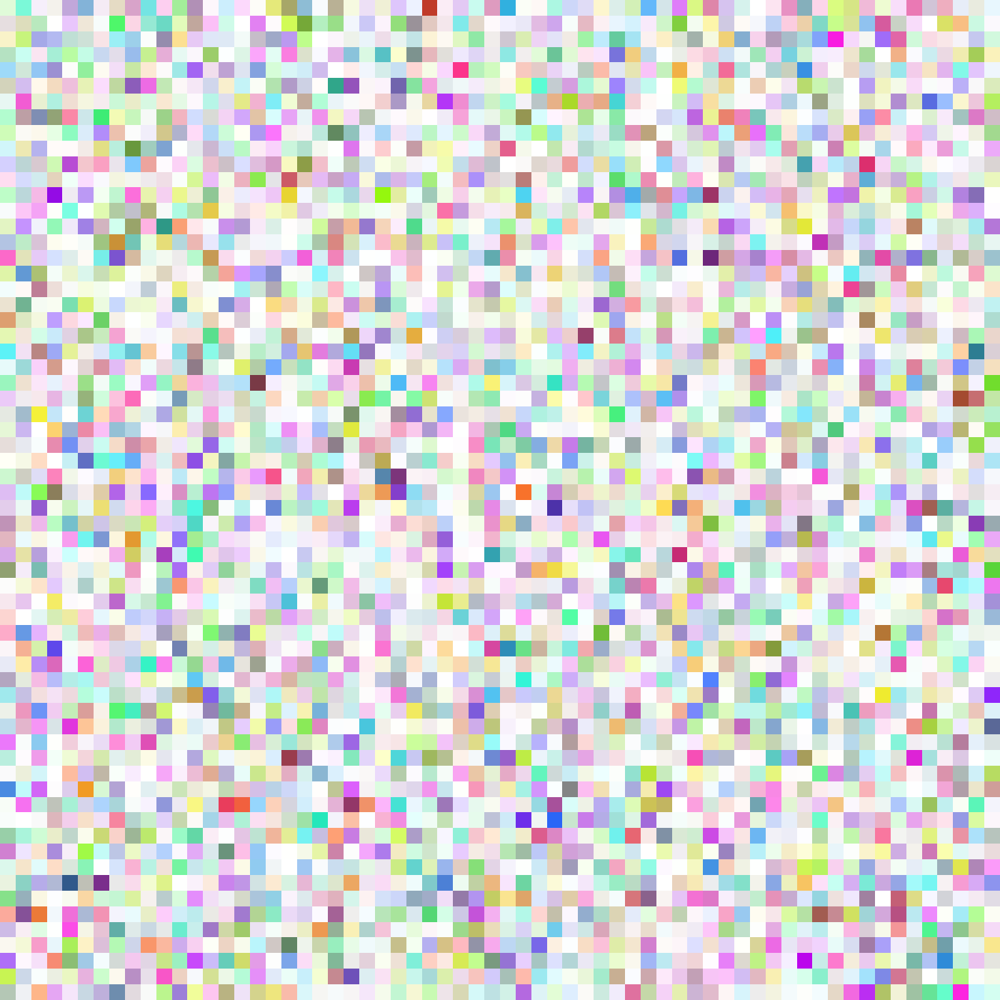

R/colorspace_descriptors.R
colorspace_descriptors.RdThese objects are color space descriptors used by rayimage to tag images
and to convert between RGB spaces. Each descriptor is a named list with:
name: Character. Human-readable name of the space.
primaries: List with r, g, b entries giving xy chromaticities.
rgb_to_xyz: 3x3 numeric matrix (linear RGB -> CIE XYZ, Y=1 white).
xyz_to_rgb: 3x3 numeric matrix (CIE XYZ -> linear RGB).
white_xyz: Length-3 numeric XYZ of the reference white (normalized s.t. Y = 1).
white_name: Character label for the white (e.g., "D60", "D65").
These are used as:
attr(img, "colorspace"): the current working/display space for an image.
attr(img, "white_current"): the current assumed scene/display white (XYZ, Y=1).
CS_ACESCG
CS_SRGB
CS_P3D65
CS_BT2020
CS_ADOBEAn object of class list of length 6.
An object of class list of length 6.
An object of class list of length 6.
An object of class list of length 6.
An object of class list of length 6.
Prebuilt RGB Working/Display Color Spaces
CS_ACESCG: ACEScg (AP1 primaries, D60, scene-linear). Recommended working space.
CS_SRGB: sRGB/Rec.709 (D65). Typical display space; used for PNG/JPEG/TIFF output.
CS_P3D65: Display P3 (D65). Wide-gamut display space.
CS_BT2020: BT.2020 (D65). Very wide-gamut; common for HDR mastering.
CS_ADOBE: Adobe RGB (D65). Photo workflows.
render_convert_colorspace() to convert images between spaces.
render_white_balance() for Bradford CAT within a working space.
plot_image(), ray_write_image() for display/output conversion.
if (run_documentation()) {
# Tag a raw array as sRGB, then convert to ACEScg:
arr = array(runif(64*64*4), dim = c(64, 64, 4))
ri = ray_read_image(arr, assume_colorspace = CS_SRGB, assume_white = CS_SRGB$white_xyz)
riA = render_convert_colorspace(ri, to_mats = CS_ACESCG)
plot_image(riA) # display-converted to sRGB automatically
# Convert an sRGB JPEG to ACEScg on ingest:
# img = ray_read_image("photo.jpg", normalize = FALSE)
# img_aces = render_convert_colorspace(img, to_mats = CS_ACESCG)
}
